6. Thiết Lập Application Load Balancer
Trong bước này, chúng ta sẽ tạo một Application Load Balancer để phân phối lưu lượng đến ứng dụng caching của chúng ta và cung cấp tính khả dụng cao.
Bước 1: Tạo Target Group
Điều Hướng Đến Target Groups
-
Mở EC2 Console
-
Nhấp Target Groups ở navigation bên trái
-
Nhấp Create target group
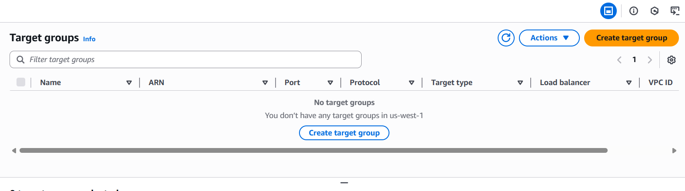
Cấu Hình Target Group
-
Cấu hình basic settings:
- Target type: Instances
- Target group name:
caching-app-tg - Protocol: HTTP
- Port: 3000
- VPC: Chọn
caching-workshop-vpccủa bạn
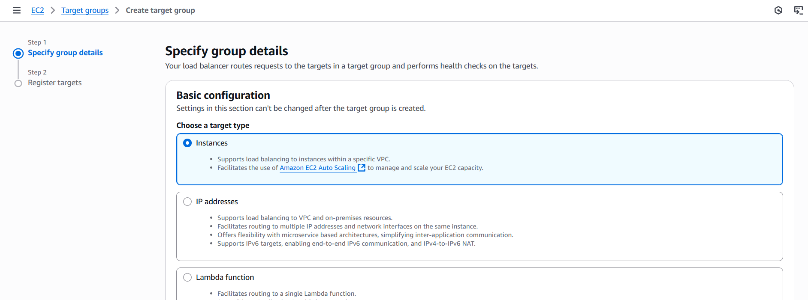
Cấu Hình Health Checks
-
Cấu hình health check settings:
- Health check protocol: HTTP
- Health check path:
/health - Health check port: Traffic port
- Healthy threshold: 2
- Unhealthy threshold: 2
- Timeout: 5 seconds
- Interval: 30 seconds
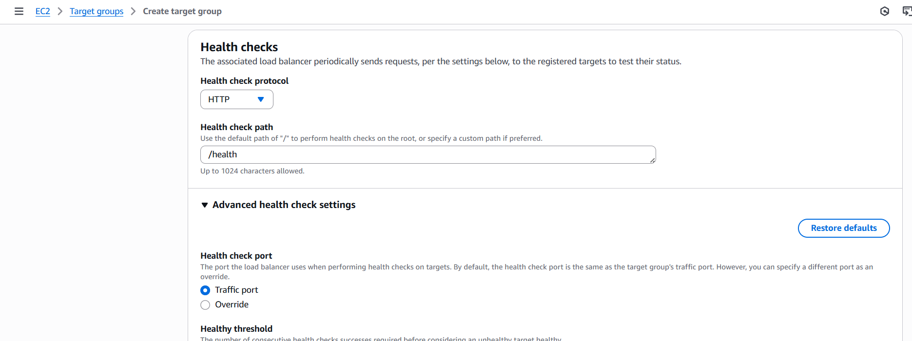
- Nhấp Next
Register Targets
-
Chọn application instance của bạn:
- Tìm instance
caching-app-servercủa bạn - Chọn nó và nhấp Include as pending below
- Tìm instance
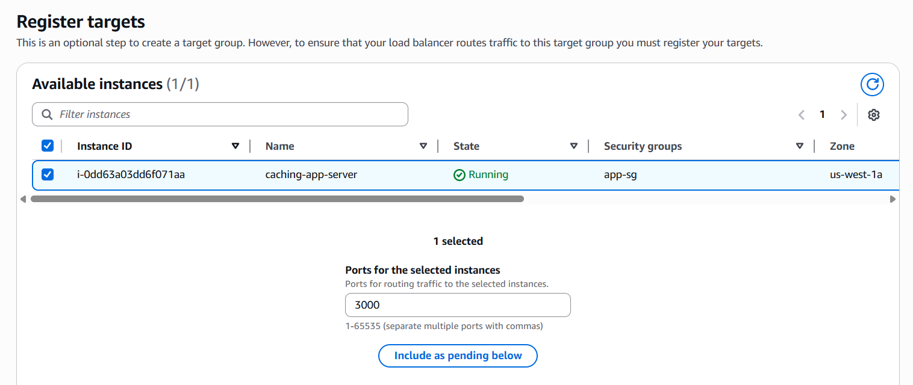
- Nhấp Create target group
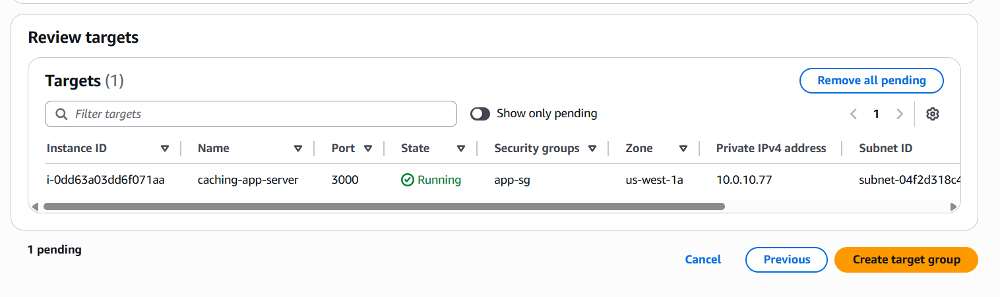
Bước 2: Xác Minh Target Health
Kiểm Tra Target Health
- Nhấp vào target group của bạn để xem chi tiết
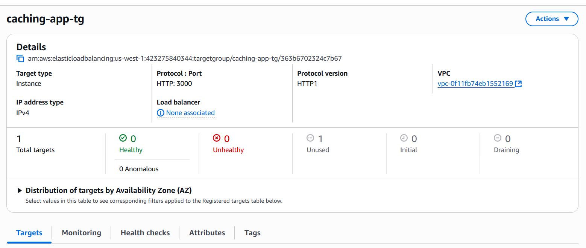
- Đi đến tab Targets và xác minh health status

Có thể mất 1-2 phút để target trở nên healthy. Health check gọi endpoint /health trên port 3000.
Bước 3: Tạo Application Load Balancer
Điều Hướng Đến Load Balancers
- Nhấp Load Balancers ở navigation bên trái

- Nhấp Create load balancer
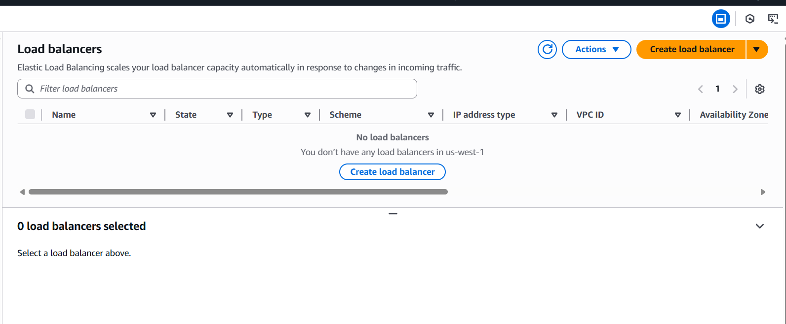
Chọn Load Balancer Type
- Chọn Application Load Balancer

- Nhấp Create
Cấu Hình Basic Settings
-
Cấu hình load balancer settings:
- Load balancer name:
caching-app-alb - Scheme: Internet-facing
- IP address type: IPv4
- Load balancer name:
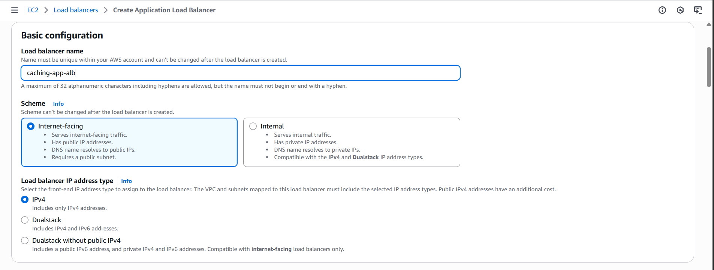
Cấu Hình Network Mapping
-
Cấu hình network settings:
- VPC: Chọn
caching-workshop-vpccủa bạn - Mappings: Chọn cả hai public subnets từ các AZ khác nhau
- VPC: Chọn
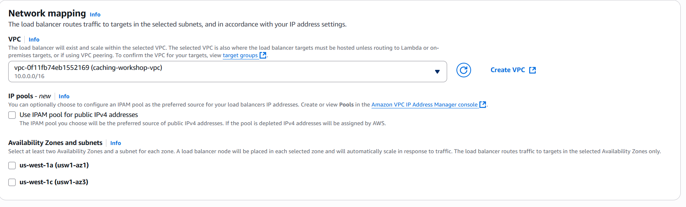
Cấu Hình Security Groups
-
Cấu hình security groups:
- Security groups: Chọn
alb-sg - Xóa default security group
- Security groups: Chọn
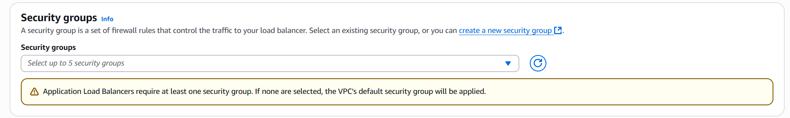
Cấu Hình Listeners
-
Cấu hình listeners và routing:
- Protocol: HTTP
- Port: 80
- Default action: Forward to
caching-app-tg
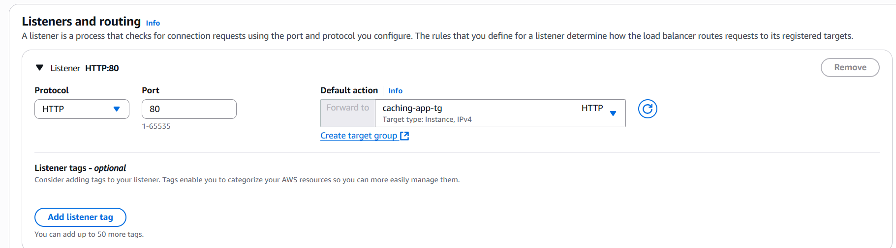
Bước 4: Review và Create
Review Configuration
- Review tất cả settings

- Nhấp Create load balancer
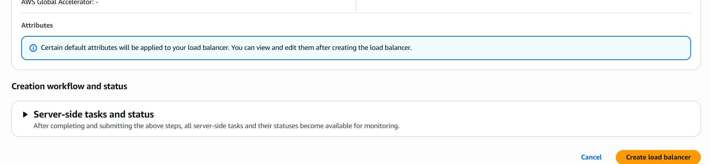
Việc tạo load balancer mất 2-3 phút. Load balancer sẽ hiển thị trạng thái “Provisioning” ban đầu.
Bước 5: Xác Minh Load Balancer
Kiểm Tra Load Balancer Status
- Đợi load balancer trở thành “Active”

- Ghi lại DNS name để testing:
caching-app-alb-xxxxxxxxx.us-east-1.elb.amazonaws.com

Bước 6: Test Load Balancer
Test Health Endpoint
- Test load balancer sử dụng DNS name của nó:
# Test health endpoint through ALB
curl http://caching-app-alb-xxxxxxxxx.us-east-1.elb.amazonaws.com/health

Test Application Endpoints
- Test tất cả application endpoints thông qua load balancer:
# Test product endpoint
curl "http://caching-app-alb-xxxxxxxxx.us-east-1.elb.amazonaws.com/product/PROD001?category=Electronics"
# Test products list
curl "http://caching-app-alb-xxxxxxxxx.us-east-1.elb.amazonaws.com/products"
# Test cache statistics
curl http://caching-app-alb-xxxxxxxxx.us-east-1.elb.amazonaws.com/stats

Bước 7: Cấu Hình Additional Features
Enable Access Logs (Tùy chọn)
- Đi đến tab Attributes của load balancer

-
Nhấp Edit và enable access logs:
- Access logs: Enabled
- S3 location: Tạo hoặc chọn S3 bucket

Configure Sticky Sessions (Tùy chọn)
-
Trong target group của bạn, đi đến tab Attributes:
- Stickiness: Enabled
- Stickiness type: Load balancer generated cookie
- Stickiness duration: 1 day

Bước 8: Giám Sát Load Balancer
CloudWatch Metrics
- Đi đến tab Monitoring để xem metrics

Các metrics chính cần giám sát:
- RequestCount: Số lượng requests
- TargetResponseTime: Response time từ targets
- HTTPCode_Target_2XX_Count: Successful responses
- HTTPCode_Target_4XX_Count: Client errors
- HTTPCode_Target_5XX_Count: Server errors

Thiết Lập CloudWatch Alarms
- Tạo alarms cho các metrics chính:
# High response time alarm
aws cloudwatch put-metric-alarm \
--alarm-name "ALB-High-Response-Time" \
--alarm-description "ALB response time is high" \
--metric-name TargetResponseTime \
--namespace AWS/ApplicationELB \
--statistic Average \
--period 300 \
--threshold 1.0 \
--comparison-operator GreaterThanThreshold \
--evaluation-periods 2
Bước 9: Test High Availability
Simulate Instance Failure
- Dừng EC2 instance của bạn để test failover:
# Stop the instance (simulate failure)
aws ec2 stop-instances --instance-ids i-xxxxxxxxxxxxxxxxx
- Kiểm tra target group health

- Test load balancer response:
# This should return 503 Service Unavailable
curl http://caching-app-alb-xxxxxxxxx.us-east-1.elb.amazonaws.com/health
Restore Service
- Start instance lại:
# Start the instance
aws ec2 start-instances --instance-ids i-xxxxxxxxxxxxxxxxx
- Đợi target trở nên healthy lại

Bước 10: Ghi Lại Load Balancer Configuration
Ghi lại thông tin sau:
Load Balancer Information
- Load Balancer Name:
caching-app-alb - DNS Name:
caching-app-alb-xxxxxxxxx.us-east-1.elb.amazonaws.com - Scheme: Internet-facing
- Security Group:
alb-sg - Target Group:
caching-app-tg
Configuration Details
- Listener: HTTP:80 → Forward to target group
- Health Check: HTTP:3000/health
- Health Check Interval: 30 seconds
- Healthy Threshold: 2 consecutive checks

Khắc Phục Các Vấn Đề Thường Gặp
Vấn Đề: Targets Hiển Thị Unhealthy
Nguyên Nhân Có Thể:
- Application không phản hồi trên health check path
- Security group chặn traffic
- Instance không chạy
Giải Pháp:
- Xác minh application đang chạy:
pm2 status - Kiểm tra health endpoint trực tiếp:
curl localhost:3000/health - Xác minh security groups cho phép traffic trên port 3000
Vấn Đề: 502 Bad Gateway Errors
Nguyên Nhân Có Thể:
- Application crashed hoặc không phản hồi
- Target group trỏ đến port sai
- Vấn đề kết nối mạng
Giải Pháp:
- Kiểm tra application logs:
pm2 logs caching-app - Xác minh cấu hình port target group
- Test direct instance connectivity
Vấn Đề: Load Balancer Không Truy Cập Được
Nguyên Nhân Có Thể:
- Security group không cho phép HTTP traffic
- Load balancer ở subnets sai
- DNS propagation delay
Giải Pháp:
- Xác minh ALB security group cho phép HTTP (port 80)
- Đảm bảo load balancer ở public subnets
- Đợi DNS propagation (lên đến 5 phút)
Tối Ưu Hóa Hiệu Suất
Connection Draining
- Deregistration delay: 300 seconds (default)
- Cho phép in-flight requests hoàn thành trước khi xóa targets
Health Check Tuning
- Faster detection: Giảm interval và threshold cho failover nhanh hơn
- Reduce false positives: Tăng threshold cho stable applications
Multiple Targets
- Auto Scaling: Thêm nhiều instances cho tính khả dụng cao hơn
- Cross-AZ: Phân phối targets qua availability zones
Các Bước Tiếp Theo
Application Load Balancer của bạn giờ đã được cấu hình và test! Bạn có:
✅ Application Load Balancer phân phối traffic
✅ Target Group với health checks được cấu hình
✅ High availability qua nhiều AZs
✅ Health monitoring với automatic failover
✅ CloudWatch metrics cho performance monitoring
✅ Security groups được cấu hình đúng
Lợi Ích Load Balancer:
- High availability: Automatic failover khi instances fail
- Scalability: Dễ dàng thêm nhiều instances phía sau load balancer
- Health monitoring: Continuous health checks đảm bảo traffic đi đến healthy instances
- SSL termination: Có thể xử lý SSL/TLS encryption (khi được cấu hình)
DNS name của load balancer sẽ được CloudFront sử dụng trong bước tiếp theo làm origin cho CDN distribution của chúng ta.
Tiếp theo, chúng ta sẽ thiết lập CloudFront để cung cấp global content delivery và edge caching.